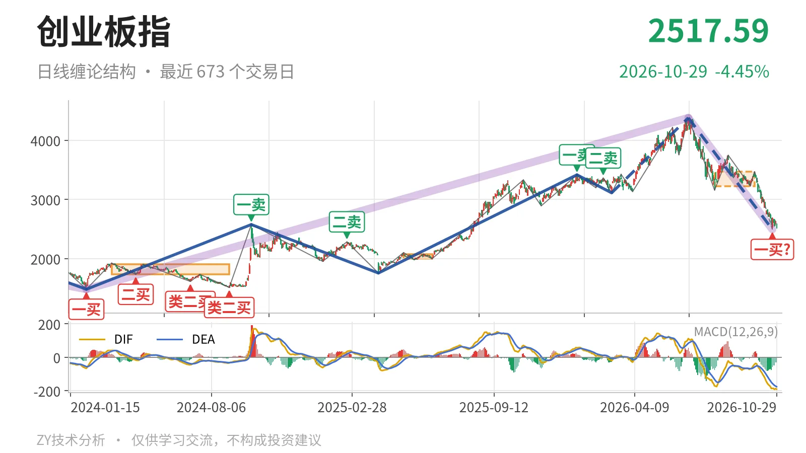
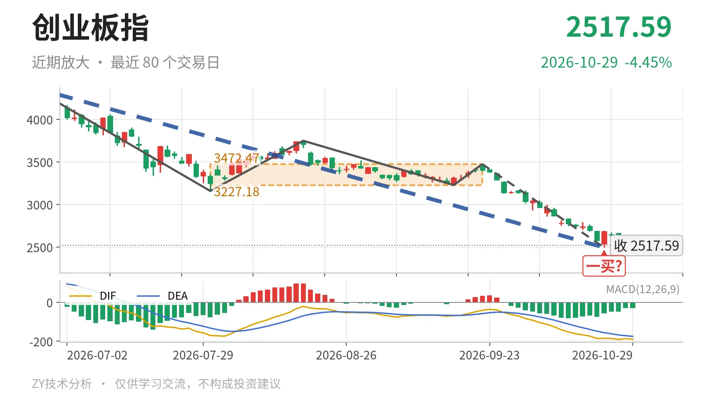

创业板指｜跌破日线中枢，反抽仍看3227点

最近日线中枢 3227.18—3472.47点，收盘位于中枢之下
一句话：反抽未回3227点，日线结构偏弱，2494点暂定一买未定
📉 走势结构：上涨段还没结束，6月25日以来的下跌线段仍在延续
日线还在回落段里，6月25日以来的下跌线段没有结束。更大级别看，2024年2月5日至2026年6月25日的上涨走势从1482.99点涨到4380.41点，上涨约195.4%，该走势还没结束；但6月25日至10月23日的下跌走势已从4380.41点回落到2494.22点，跌约43.1%，这段回落也还在延续。日线线段上，3月9日至6月25日的上涨线段和6月25日至10月23日的下跌线段都没有结束，当前处在下跌线段内部。其中6月25日至10月23日的下跌线段已含5笔，最后一笔9月22日至10月23日仍在延续，价格暂未跌破10月23日低点。

📍 中枢与位置：现价跌破日线中枢下沿约22%
最新收盘2517.59点，已跌破7月30日至9月22日的日线笔中枢下沿3227.18点，低于下沿约22%。该中枢区间为3227.18—3472.47点，中轴3349.83点，尚未完成。此前日线笔中枢由1996.96—2076.91点上移至3227.18—3472.47点，中枢上移之后价格没有守住下沿。10月26日至10月29日的日内最高2671.81点、最低2516.78点，距下沿还差约555点，反抽没有回到中枢内部。
🔄 买卖点：10月23日一买暂定，前高卖点降级
10月23日2494.22点的日线一买只是暂定的一买。它所在的9月22日至10月23日下跌笔还在延续，因此会随这一笔变化；该笔没有结束前，这个买点不能当作最终结构。1月13日3416.84点一卖、2月25日3363.18点二卖之后，价格在6月25日创出4380.41点新高，这两个卖点只对应较小级别。3月9日3111.88点的线段三买之后，日线线段仍有一段上冲，但现已回到该点下方。

⚡ 动能与背驰：6月25日上涨笔出现“新高不新强”
最关键的动能背离出现在6月11日至6月25日的上涨笔。该笔对4月7日至6月3日的上涨笔，红柱面积由1149缩到227，DIF高点由143.3降到112.1，价格却创出4380.41点新高，这是标准的新高不新强。最新MACD的DIF为-190.6，DEA为-175.6，柱为-29.9，DIF仍在零轴下方，说明本轮回落段还没出现结束信号。
🧭 关键位置观察：反抽不回3227点，结构偏弱
当前日线结构偏弱，弱在价格跌破最近日线中枢下沿后没有回拉，MACD的DIF也处在零轴下方。上方关键位置看3227点附近：若反抽回不到3227.18点上方，对7月30日至9月22日日线中枢而言，结构上构成三卖；若重新站上3227点，下跌更可能只是中枢扩展。下方先看2494点附近，这是10月23日暂定一买位置，若其后继续新低，该买点只对应更小级别；若能先站上2671.81点，短线回落才有止稳结构。整体结构偏弱，接下来看反抽与3227点的关系。
⚠️ 本文为基于公开行情数据的缠论技术结构记录，由程序自动计算并生成，仅供学习交流，不构成任何投资建议。市场有风险，投资需谨慎。